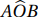
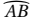
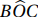
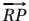

2.2 Arcos de Circunferência
Dados uma circunferência Γ de centro O, e os pontos A e B, distintos, da circunferência, chama-se ângulo central o ângulo .
Um ângulo central define dois arcos, tais que o conjunto dos pontos da circunferência situados interidnte ao ângulo central, é o arco menor; e o conjunto dos pontos situados exteriormente ao ângulo central, é o arco maior.
Se o ângulo central medir 180 graus, dizemos que o arco  em qualquer hemisfério é semicircunferência e o segmento AB é diâmetro.
De todo modo, uma semicircunferência, um arco menor ou um arco maior determinam simplesmente um arco da circunferência e os pontos A e B são extremidades do arco. Sendo X um ponto interior a um arco de circunferência, denotamos por tal arco.
Um ângulo cujo vértice é a extremidade comum de duas cordas distintas é um ângulo inscrito na circunferência. Se em um destes ângulos os extremos não comuns são diâmetro, então este ângulo é ângulo inscrito na semicircunferência.
Seja  um ângulo inscrito em uma circunferência que contém os pontos B e
C. Esses pontos definem dois arcos. O arco que não contém o ponto A é chamado de
arco correspondente ao ângulo inscrito dado. O ângulo correspondente está
inscrito nesse arco.
um ângulo inscrito em uma circunferência que contém os pontos B e
C. Esses pontos definem dois arcos. O arco que não contém o ponto A é chamado de
arco correspondente ao ângulo inscrito dado. O ângulo correspondente está
inscrito nesse arco.
e este ângulo está inscrito no arco .
A medida de um arco, denotado por m(),
é a medida do ângulo central correspondente m( ) se for arco menor; 180º,
se o arco
for semicircunferência; ou $$m(\overparen{AXB}) = 360^{\circ} - m(A\widehat{X}B)$$ se for arco maior.
) se for arco menor; 180º,
se o arco
for semicircunferência; ou $$m(\overparen{AXB}) = 360^{\circ} - m(A\widehat{X}B)$$ se for arco maior.
A medida do ângulo inscrito na circunferência é a metade da medida do seu arco correspondente.
Considere um ângulo , inscrito em uma circunferência Γ, em que B
e C são extremidades de um arco
e O é centro da circunferência. Deseja-se mostrar que $$m(B\widehat{A}C) = \frac{1}{2} m(B\widehat{O}C).$$
Suponha, primeiramente, que C = D e que AC é diâmetro.
Note que  é ângulo externo do triângulo ΔBAO, logo,
$$m(B\widehat{O}C) = m(B\widehat AO) + m(A\widehat BO).$$Note também que este triângulo é isósceles, pois AO ≡ OB. Assim,
$$m(B\widehat AO) = m(A\widehat BO) ~\text{e}~ m(B\widehat{O}C) = 2\cdot m(B\widehat AO).$$Suponha agora que nem AB nem AC são diâmetro, além disso, estão em hemisférios opostos.
Olhando para o diâmetro AD, pelo caso anterior,
$$m(B\widehat{A}O) = \frac{1}{2}m(B\widehat{O}D).$$Do mesmo modo,
$$m(C\widehat{A}O) = \frac{1}{2}m(C\widehat{O}D).$$Somando estas duas igualdades, tem-se o resultado esperado.
Finalmente, suponha que nem AB nem AC são diâmetro, além disso, estão em um mesmo hemisfério.
Na representação acima, os pontos aparecem na ordem: A, B, C e D. No entanto, poderiam aparecer A, C, B e D, mas a demonstração seria análoga.
Olhando para o diâmetro AD, pelo caso anterior,
$$m(B\widehat{A}O) = \frac{1}{2}m(B\widehat{O}D).$$Do mesmo modo,
$$m(C\widehat{A}O) = \frac{1}{2}m(C\widehat{O}D).$$Porém,
$$m(B\widehat{A}C) = m(B\widehat{A}O) - m(C\widehat{A}O)$$e
$$m(B\widehat{O}C) = m(B\widehat{O}D) - m(C\widehat{O}D).$$Fazendo as substituições adequadamente,
$$m(B\widehat{A}C) = \frac{1}{2}m(B\widehat{O}D) - \frac{1}{2}m(C\widehat{O}D).$$Daí,
$$m(B\widehat{A}C) = \frac{1}{2}\Big [m(B\widehat{O}D) - m(C\widehat{O}D)\Big].$$Portanto
$$m(B\widehat{A}C) = \frac{1}{2}\Big[ m(B\widehat{O}C) \Big].$$Ângulos inscritos em uma semicircunferência são retos.
De fato, o arco correspondente, neste caso, é o da semicircunferência, que mede 180º e pelo Teorema 2.8, o ângulo inscrito mede 90º.
Ângulos inscritos em um mesmo arco são congruentes.
A validade deste Corolário é facilmente percebida ao tomarmos um arco
e dois pontos C e C' tais que os ângulos e  estejam inscritos nele. Pelo Teorema 2.8 temos que:
estejam inscritos nele. Pelo Teorema 2.8 temos que:
Em uma mesma circunferência ou em circunferências congruentes, dois arcos são congruentes se tem a mesma medida.
Em uma mesma circunferência ou em circunferências congruentes, duas cordas são congruentes se, e somente se, são congruentes os arcos menores correspondentes.
Considere em uma circunferência Γ, centro em O e os menores arcos e definidos, respectivamente, pelas cordas AB e CD.
Suponha inicialmente que as cordas AB e CD sejam congruentes. Temos que AB e CD são as bases dos triângulos ΔAOB e ΔCOD, ambos congruentes pelo caso Lado-Lado-Lado. (se achar necessário, reveja o Teorema 2.7. Assim temos que os ângulos centrais destes arcos são congruentes, consequentemente, os arcos e possuem mesma medida.
Por outro lado, se os arcos e são congruentes, possuem ângulos centrais congruentes, tais que os raios AO, BO, CO e DO definem os triângulos isósceles cujas bases são as cordas AB e CD, de sorte que tais triângulos são congruentes. Portanto, AB e CD possuem a mesma medida.
Se, em uma circunferência Γ, duas cordas AB e CD se encontram no ponto P, tem-se:
$$PA\cdot PB = PC\cdot PD.$$Sejam as cordas AB e CD que se intersectam no ponto P, conforme Figura 2.12. Traçando os segmentos BC e AD tem-se que os ângulos e são congruentes, pois são opostos pelo vértice. Além disso os ângulos e estão inscritos em um mesmo arco, logo, são congruentes. Do mesmo modo, e são congruentes, caso Ângulo-Ângulo-Ângulo. Portanto ΔCPB ≅ ΔAPD e por esta semelhança temos: $$PA\cdot PB = PC\cdot PD.$$
Dada uma reta , tangente a uma circunferência C no ponto R, o segmento PR é chamado segmento tangente desde P até a circunferência, e a semirreta  é chamada semirreta tangente à circunferência no ponto R.
Em uma circunferência Γ de centro O, se dado um ponto P exterior a Γ, temos duas, e somente duas, retas contendo P e tangentes à circunferência Γ.
Seja Γ uma circunferência de centro O e P um ponto exterior de Γ. A reta divide Γ em duas semicircunferências. Tomemos o ponto R em uma das semicircunferências tal que o ângulo seja reto. Isto é possível pela definição de circunferência, logo tal ponto existe. Deste modo a reta é tangente à circunferência em R.
Tomando um ponto S na outra semicircunferência, de modo análogo, temos que a reta é tangente à circunferência em S.
Deste modo, todos os pontos da circunferência, exceto os pontos R e S estão no interior de um setor angular entre as retas e . Isto descarta a possibilidade de coexistir outra reta tangente, pois quaisquer outras retas em P definirão uma corda na circunferência Γ ou não possuirão ponto em comum com ela. Portanto, existem dois, e apenas dois, segmentos tangentes desde P até a circunferência.

Os dois segmentos tangentes à uma circunferência desde um mesmo ponto exterior dado são congruentes e formam ângulos congruentes com a reta que une o ponto exterior e o centro da circunferência.
Considere a Figura 2.13. Pelo Corolário 2.3, os triângulos ΔORP e ΔOSP são retângulos em R e em S, além disso, OR = OS e a hipotenusa OP é lado comum, logo eles são congruentes pelo caso Lado-Lado-Ângulo. Portanto, ≡ e RP ≡ SP.
Dadas uma circunferência Γ e um ponto exterior P. Sejam r e l retas secantes passando por P e que interseccionam Γ nos pontos R e S e nos pontos U e L respectivamente. Seja t uma reta que passa por P e é tangente a Γ no ponto T. Então valem as igualdades $$PR \cdot PS = PU \cdot PL = (PT)^2.$$
Olhando para os triângulos ΔSPU e ΔLPR, (Figura 2.14) é ângulo comum. Como e estão inscritos no arco , tem-se que ≡ , logo esses triângulos são semelhantes (caso Ângulo-Ângulo-Ângulo). Daí, temos a primeira igualdade:
Vamos verificar a validade da igualdade:
$$PR \cdot PS = PU \cdot PL = (PT)^2$$(Veja Figura 2.15)
Dados os pontos A e B na circunferência e o ponto P, colineares, e P é exterior à circunferência. Seja O o centro da circunferência e AB o diâmetro cujo prolongamento contém P. Seja TP o segmento tangente à circunferência em T.
Pela Proposição 2.1, o triângulo ΔOTP é retângulo em T, daí, aplicando o Teorema de Pitágoras, tem-se que $$TP^2 = OP^2 - OT^2.$$ Note que OB = OT , logo, $$TP^2 = OP^2 - OB^2,$$ além disso, OP = OB + BP, daí,
\begin{align*} TP^2 &= (OB + BP)^2 - OB^2\\ &= OB^2 + 2\cdot OB\cdot BP + BP^2 - OB^2, \end{align*} obtendo-se a relação:
Mas AP = AO + OB + BP e AO = OB. Logo, AP = 2⋅ OB + BP, e aplicando a equação (2.1), temos: $$AP \cdot BP = SP \cdot RP.$$ Substituindo AP, vem: $$(2\cdot OB + BP) \cdot BP = SP \cdot RP,$$ e, aplicando a relação (2.2) tem-se: $$2\cdot OB\cdot BP + BP^2 = TP^2 = SP \cdot RP.$$
O Teorema 2.15 é um caso degenerado do Teorema das Cordas (Teorema 2.12), e nos garante que as igualdades acima existem desde que sejam dados a circunferência e o ponto exterior P. O produto PR ⋅ PS = PT² é constante e é chamado potência do ponto P em relação à circunferência. Considerando o Teorema de Pitágoras é possível escrever essa potência em função do raio da circunferência e da distância entre o ponto exterior e o seu centro.
Um polígono é inscritível se tem os seus vértices pertencentes a uma circunferência. Neste caso, dizemos que o polígono está inscrito nessa circunferência, ou que tal circunferência é a circunferência circunscrita ao polígono.
Um polígono é circunscritível se seus lados são tangentes a uma mesma circunferência. Neste caso dizemos que o polígono está circunscrito à circunferência e tal circunferência é a circunferência inscrita no polígono.